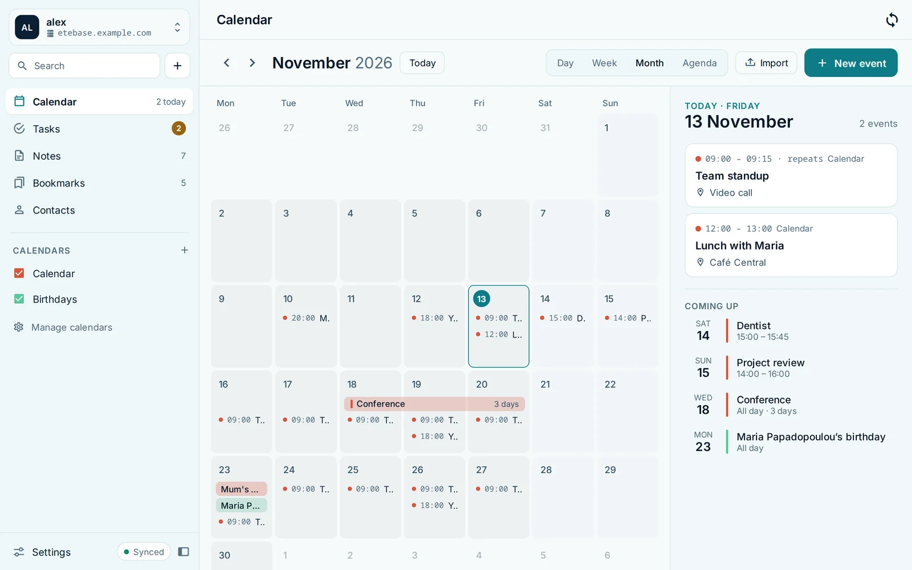
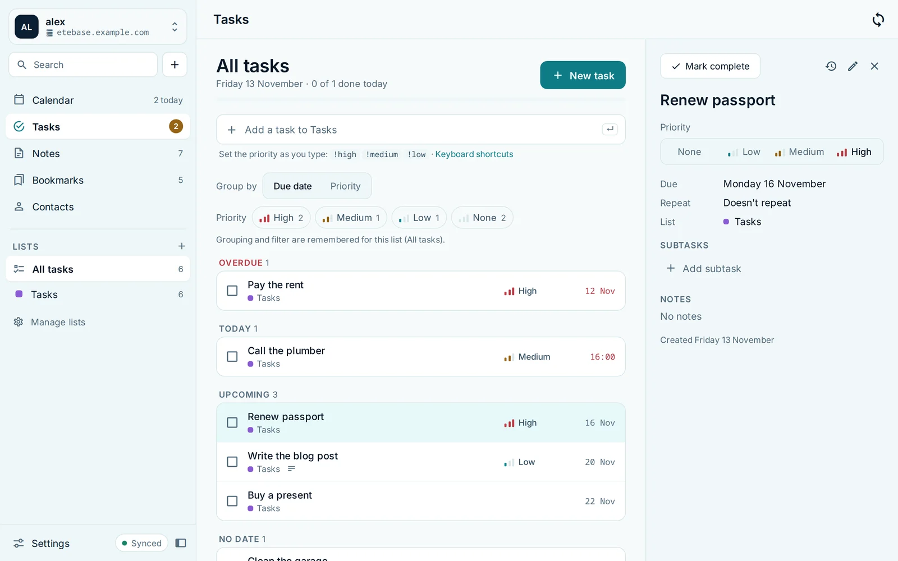
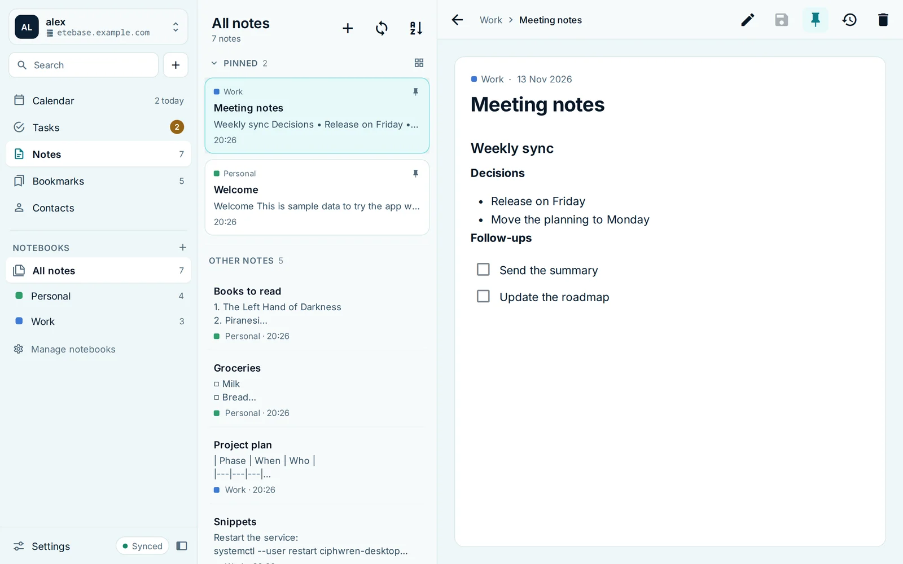
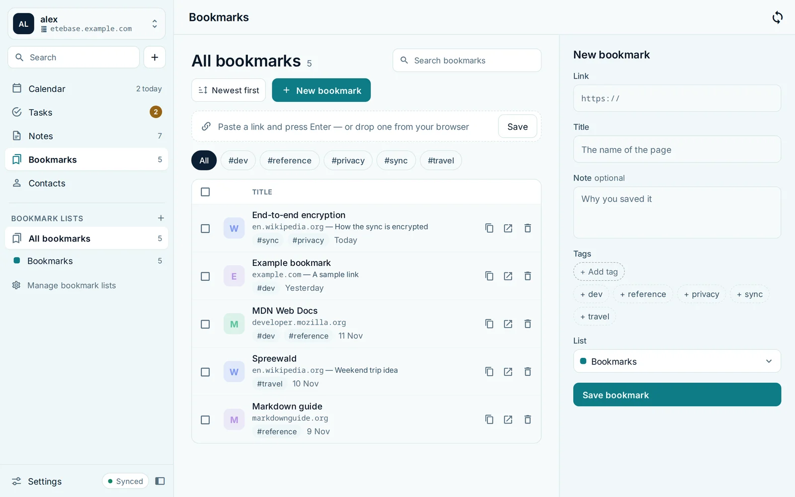
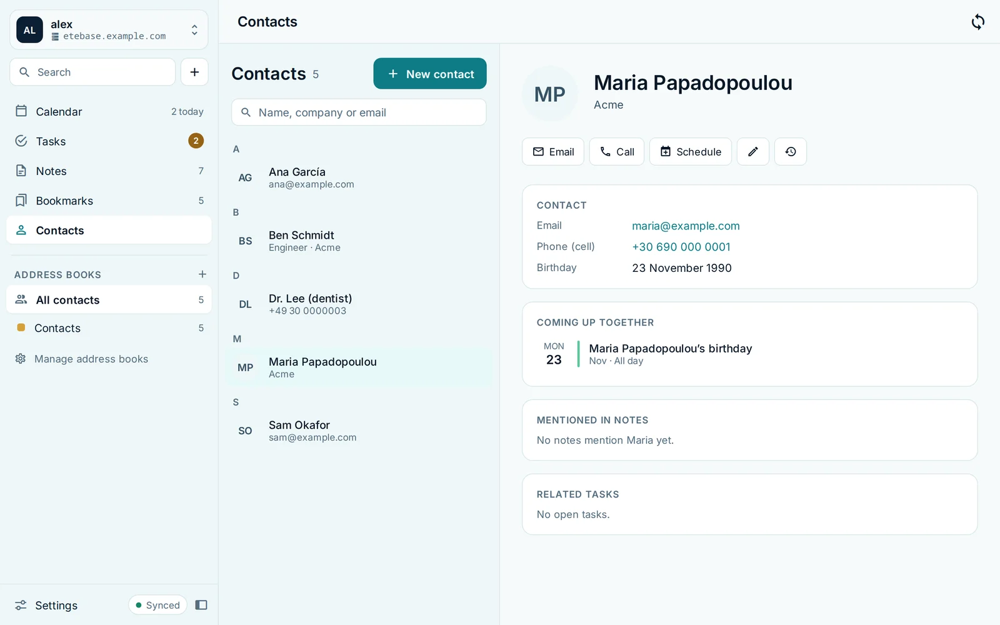
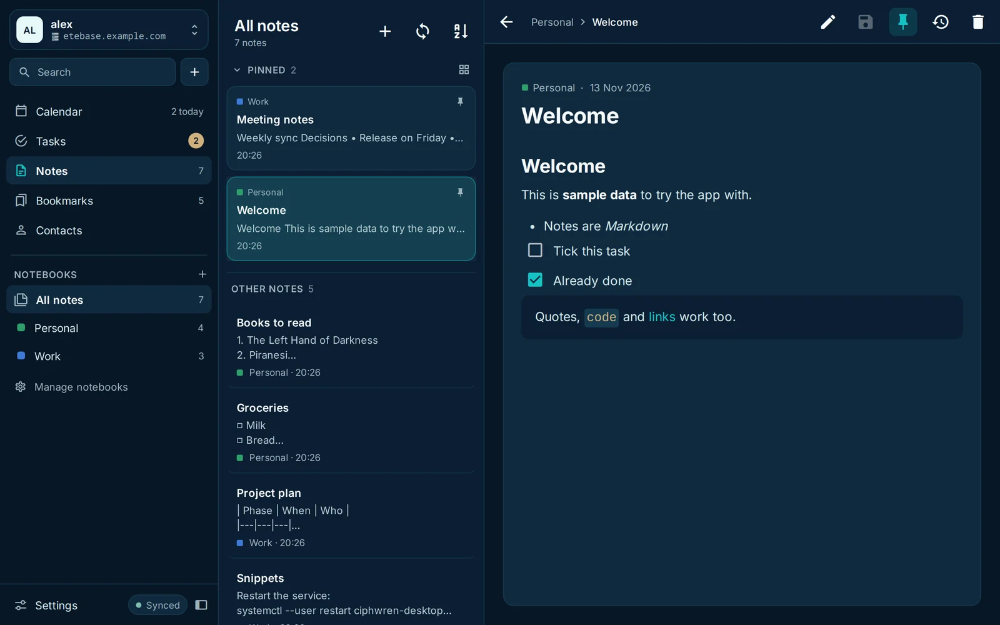

Private by design Linux desktop
Everything in place. Under your control.
Calendar, tasks, notes, bookmarks and contacts in one Linux app. Encrypted on your device, useful offline, and synced to a server you run yourself.
2.5 MB Python 3 and a browser checksum verified

01The workspace
One window for the whole day.
Most organisers make you choose: a calendar app, a notes app, a tasks app, and a folder of bookmarks somewhere else. Here the five things that make up a day sit beside each other, over one encrypted store and one login.
Month, week, day and agenda.
Four ways to look at the same time, with repeating events that keep the single times you moved or cancelled — even when the whole series moves later.
- Drag an event to another hour or day
- Time zones saved with the event, never assumed
- Attendees picked from your contacts
A list that knows the date.
Overdue, today, upcoming and undated — or grouped by priority. Subtasks and due times stay with the task, and the grouping you choose is remembered per list.
- Type
!highin a new task to set its priority - Progress for today, folded completed tasks
- Repeating tasks and reminders

Markdown, with a memory.
Notebooks, pinned notes and search that stays quick. Every change keeps an earlier version in History, and a deleted note waits eight seconds with Undo before it goes.
- Paste from a web page and keep the formatting
- Code, quotes, checklists and tables render as written
- Export every notebook as Markdown in a zip

Links, without the tracking.
Saved with lists, tags and a note about why you kept it. Tracking parameters like utm_source and fbclid are removed before the link is stored, and the site is never contacted unless you ask for its title.
- Same bookmarks as Ciphwren Notes on Android
- Paste a link, or drop one from your browser
- Search, sort, tag and edit in bulk

People, in context.
Address books, groups and a search across names, companies and email addresses. A person's page gathers what involves them — their birthday and events, plus the notes and open tasks that mention them.
- Email, call or invite them to an event
- Birthdays appear in the calendar
- Import and export vCard

02The small things
Decisions you only notice when they are missing.
-
Offline
Works at 30,000 feet
Everything is kept on this computer and pushed when the connection returns. Editing on a plane is not a degraded mode.
-
Undo
Deleting is reversible
A deleted note or bookmark waits eight seconds with Undo, and only then goes — taking its history with it if you change your mind.
-
Open formats
Leaving is supported
Import and export
.ics,.vcf, Markdown zips and browser bookmark files. Nothing is trapped in a database you cannot open. -
Links
Tracking does not survive
utm_…,fbclid,gclidand the rest — including YouTube's and Spotify'ssi— are stripped before a link is saved. -
Keyboard
The mouse is optional
Alt+1 to Alt+5 move between sections, ? lists every shortcut, and the editor has one for each format.
-
Reminders
Reminders other apps respect
Saved as standard VALARM entries, so your phone's calendar shows them — and the ones it makes are shown and kept here.
Light and dark
One app, two themes.
Light, dark, or whatever your desktop is already using. The whole app changes, and either one can be pinned in Settings.

03What leaves this computer
The honest accounting.
Privacy pages usually describe what a server cannot see. This one also says what it can.
On this computer
Encrypted before it moves.
- Notes, events, tasks and contacts are encrypted here, before anything is sent — and decrypted here after it arrives.
- Your password is never transmitted. The login proves you know it without sending it.
- The app opens in a browser profile of its own: no extensions, and the permissions it does not use are turned off.
On your server
Ciphertext, and the names of things.
- Your content exists as encrypted collections that only your account's keys can read.
- Kept readable, so the lists draw without decrypting everything: notebook, calendar, list and address-book names, note titles, and bookmark links, titles and tags.
- Whoever runs the server sees that collections exist and roughly when they change. They cannot read what is in them.
The edges, stated plainly
- Saving a link never contacts the site. Only Get title fetches that one page, from this computer, for its title.
- Images in a note load only when you click them, so opening a note tells no site that you did.
- The app talks to your server and nowhere else. Links open in your normal browser, and the local server hands them over.
- The local server listens on
localhost:8092only, refuses other hostnames, and lets only the app's own code run.
Elsewhere
The same account, in your pocket.
Ciphwren Notes for Android keeps notes and bookmarks on the same server — the same collections, encrypted the same way.
04Install
One line, then your server's address.
A shell, Python 3 and a browser you already have. No account with us, no package repository to add, no daemon to babysit.
-
Run the installer
It downloads the latest release — about 2.5 MB — checks its checksum, and adds Ciphwren Desktop to your applications menu.
-
Open it
A small server starts on
localhost:8092, reachable only from this computer, and the app opens in its own window. -
Sign in
Your server's address goes under Advanced settings —
https://etebase.example.com— then your username and password.
curl -fsSL https://raw.githubusercontent.com/nikossvnk/ciphwren-desktop/main/desktop/get.sh | sh
The download is checked before it installs. Run the same line again to update.
Other ways to run it
- No systemd, or no service at login
curl … | SERVICE=no sh- A shortcut on the desktop
~/.local/share/ciphwren-desktop/install.sh --desktop-icon- Try it without installing
- Unpack
ciphwren-desktop-VERSION.tar.gzand run./ciphwren-desktop. - Remove it
~/.local/share/ciphwren-desktop/install.sh --uninstall
- System
- Linux, with Python 3
- Browser
- Chromium, Chrome, Brave, Edge or Firefox
- Download
- About 2.5 MB, checksum verified
Your server, your keys, your data. Nothing to cancel.